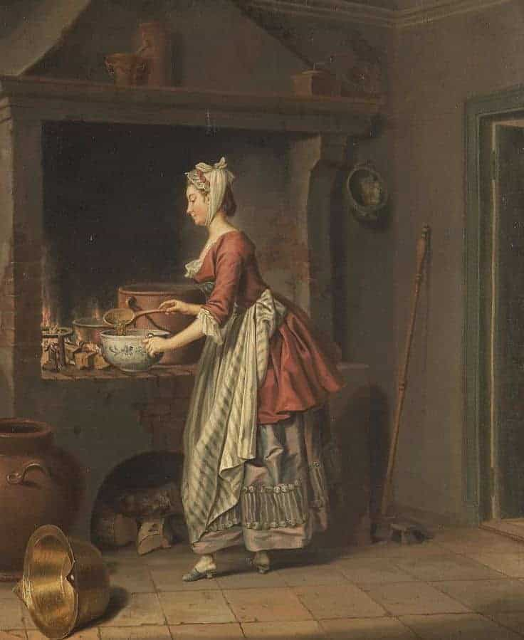
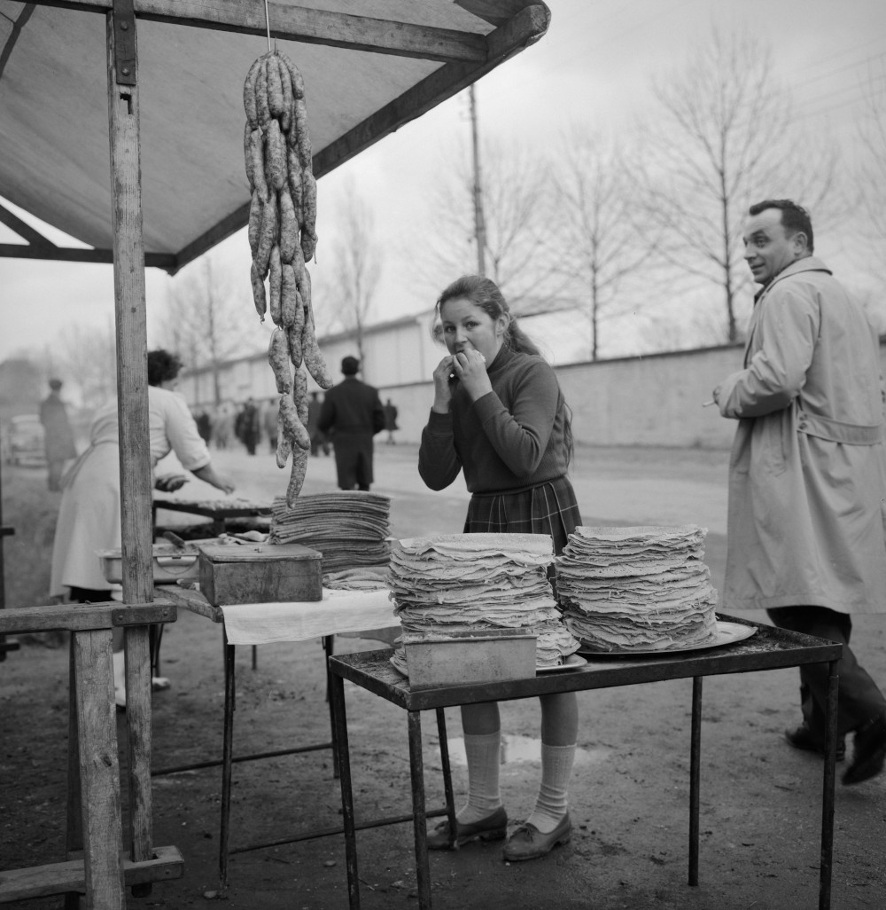
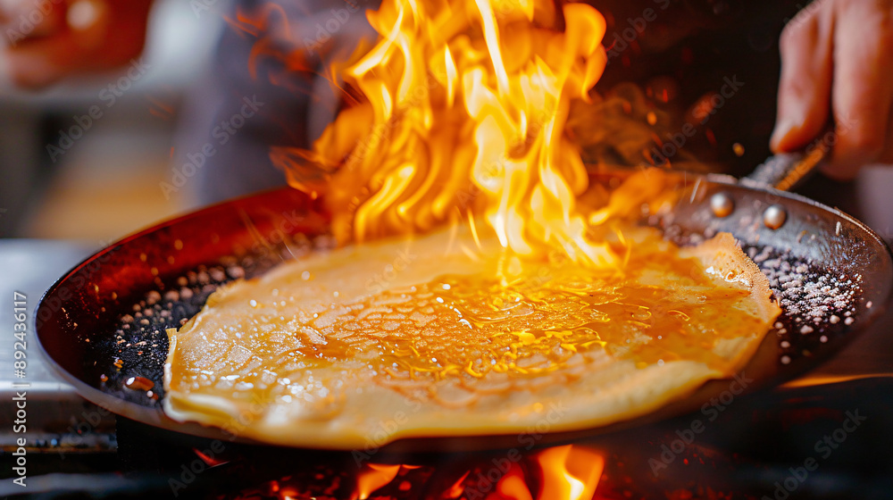
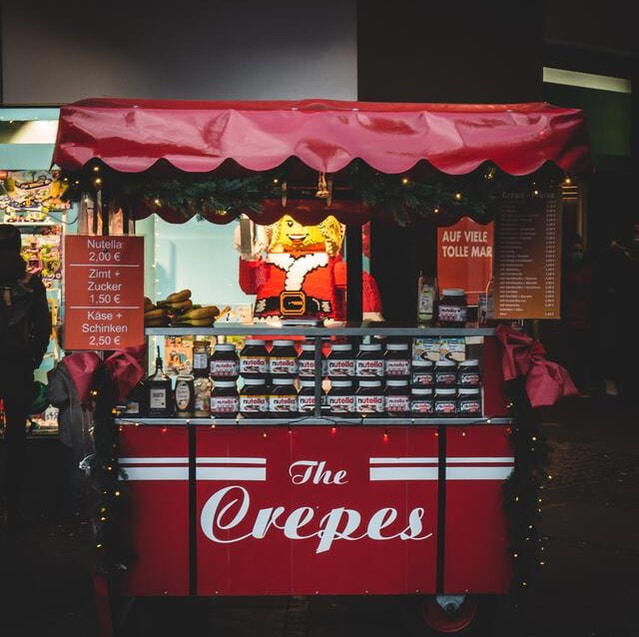

A história do crepe francês
Para os franceses, crepe remete sempre algo festivo e alegre.
-
O Nascimento do Crepe Francês
O crepe é um tipo de panqueca feito à base de farinha de trigo, leite e ovos. Possui uma massa bem fina e geralmente acompanha recheio que pode ser doce ou salgado. É originário da Bretanha, região a noroeste da França. Em francês se escreve com acento “crêpe”, e a palavra vem do latim “crispa”, que significa “crespo” ou “ondulado”, fazendo referência à textura que a massa adquire após ser passada na frigideira ou na chapa de metal untada com manteiga.
-

Das Pedras Quentes à Bretanha Medieval
Acredita-se que o crepe tenha surgido por volta de 7000 a.C., quando povos antigos preparavam uma massa grossa de grãos moídos e água, cozida sobre pedras quentes. Já na Bretanha, o crepe apareceu por volta do século XII, após as Cruzadas, quando o trigo-sarraceno (trazido da Ásia) passou a ser cultivado na região. Os bretões usavam essa farinha para preparar crepes salgados, que se tornaram parte essencial da dieta local.
-

Da Mesa dos Nobres às Feiras Populares
No final do século XVIII, o “Dictionnaire Universalis” descreveu os crepes como “um tipo de massa muito conhecida nas terras celtas”. Nessa época, o trigo branco era um privilégio das classes mais ricas. Com o avanço das técnicas agrícolas no século XIX, sua produção aumentou, tornando os crepes de farinha branca cada vez mais populares entre todas as classes sociais.
-
O Crepe Conquista Paris
Durante o século XIX, muitos moradores da Bretanha migraram para Paris, levando consigo a tradição dos crepes. Eles abriram restaurantes e creperias que logo se tornaram sucesso entre os parisienses e turistas. Até hoje, alguns dos melhores crepes da cidade são encontrados no bairro de Montparnasse, onde os imigrantes bretões se estabeleceram.
-

O Surgimento do Famoso Crêpe Suzette
No início do século XX, surgiram os crepes feitos com farinha branca e recheios doces, como o famoso “Crêpe Suzette”. Essa receita nasceu em 1895, quando o jovem ajudante Henri Carpentier, por engano, criou uma sobremesa flambada para o futuro rei Eduardo VII da Inglaterra. O prato se tornou um símbolo da culinária francesa, preparado com molho de açúcar, manteiga, licor Grand Marnier e suco de laranja.
-

O Crepe Pelo Mundo
Hoje, o crepe é apreciado em todo o mundo, tanto em versões doces quanto salgadas. Na França, o crepe bretão de trigo-sarraceno continua sendo tradicional, servido com presunto, queijo e ovo. Já os crepes doces são recheados com Nutella, frutas ou chantilly. O costume francês diz que cada convidado deve preparar seu próprio crepe, como símbolo de boa sorte e prosperidade para o anfitrião.